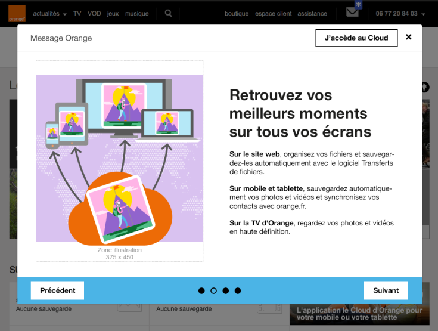

Web design - Common navigation
Make sure that the user easily navigate within page and more generally in the website
Link and button labels #
Target: everyone and especially people with visual impairments, cognitive limitations or attention difficulties.
When: when designing the service and during graphic design.
Description:
The links texts and buttons texts should be explicit enough.
In exceptional cases when it is technically impossible, provide a explicit label that can be read only by screen reader (and other assistive technologies).
Do:
Learn about our offers
Don’t:
click here
more details
Avoid dialogues and opening new windows #
Target: elderly people, people with cognitive or visual impairments or using a device outdoors.
When: as of design and in the development.
Description:
Avoid as much as possible the actions that open a new window (or a new tab) of the browser. If a link triggers the opening of a new window, you need to ensure that the text “new window” is vocalized by screen readers programmatically. So that visually impaired people know that a new window has been opened.
Also avoid the systematic use of dialogues to display information in the pages (presentation of service…).
They must be reserved for important information that requires immediate attention and remain small.
These modal windows or pop-in often cause accessibility problems for people who navigate with a keyboard or a screen reader, and they will require special attention during the development phase.
Don’t:
In the example below the use of a dialogue is not justified. Using a standard web page would:
- allow more space to the content (by removing the margins around the dialogue),
- allow the “back” button to go back when navigating between pages of the dialogue,
- make the display on small screens easier,
- avoid accessibility problems for people who navigate using the keyboard or using a screen reader,
- reduce the weight of the page and improve loading time, as in this example the page behind the dialogue box must be charged.

Provide skip links #
Target: useful for mobile and tablet users, people with visual impairments, motor disabilities or using a device outdoors.
When: as of the design phase and in the development.
Description:
Provide skip links such as “Skip to content” on each page. It facilitates navigation for people using the keyboard, using a device outdoors or with a screen reader. In very specific cases, the links can be hidden on the screen and appear only when keyboard navigation is detected.
Example:
Skip links (“Skip to navigation”, “Skip to content”) are available on this site.
To make them appear, move the focus on the top of the page by clicking on your browser’s address bar, for example, then repeatedly press the TAB key.

Allowing control of animations #
Target: people with visual impairments, reading/attention/understanding difficulties and seizure disorders.
When: when designing the service and during graphic design.
Description:
All moving, refreshed or flashing content must provide a way to be stopped, paused or hidden by the user, i^f this animation last more than 5 seconds.
Also, avoid as much as possible flashing content and sudden brightness changes (see The logo of the Olympics causes seizures).
Example:

A carousel that automatically scrolls must be paused when the mouse is over it or when it receives the focus.
It is also possible to add a “pause” button directly in the interface.
Explicitly locate the page in the site and provide several ways to access it #
Target: everyone, especially people who are visually or cognitively impaired.
When: when designing.
Description:
Give the user several ways to locate and access specific content, locate the web page being viewed in a set of pages. When the page is a step in a process where the pages follow one after the other, this criterion can be ignored.
Checklist:
Make sure that several systems allow you to locate and access a page or content in the site: a search tool on the entire site, a site map, a global navigation menu, a breadcrumb trail ...
Do:
The site offers, at the same time, a complete and precise main navigation and a breadcrumb trail.
Don't:
An application provides a parcel navigation menu and no other way for the user to navigate the pages or locate where the current page is in the tree.
Ensure that the help elements are placed in the same relative order on the pages that include them. #
Target: Everyone, especially people with visual impairments, cognitive problems or memory loss, to facilitate access to the help mechanism on a website or application.
When: when designing.
Description :
Help elements must be positioned in the same places and in the same relative order (i.e., related to other elements on pages) on all the pages where they are present.
For example, in the case of a common header, only the relative order of the content present in it and on all the pages containing the help mechanism should be taken into account.
The following are considered to be help elements:
- Human contact details: email, address, telephone, opening hours.
- Human contact mechanisms: customer chat, contact form, redirect link to external help (social network or other).
- Self help options: FAQ, selfcare link, help page, etc.
- Fully automated contact mechanisms: chatbot, etc.
This criterion does not require the presence of help mechanisms but to ensure their relative order remains the same eveywhere if present.
If the page structure is modified according to the user profile (e.g. visitor profile or logged-in profile), each profile should be checked.
Good practice: If possible, the visual order should also be respected.
Checklist:
- Identify the repeated presence of help elements on different pages.
- Help elements appear in the same relative order: any other content present in all the web pages and located before the help element must be located before the help element on this page. Elements located after the help element on other pages must be located after the help element on this page.
- Recheck the above points for each display mode (user profiles, CSS breakpoint on the web, portrait/landscape mode on mobile).
NB: If the visual order differs from the relative order, then a particular attention should be paid to criterias 1.4.4 Resize text et 2.4.3 Focus order.
Exceptions:
- Compliant: An element is not positioned visually and exactly in the same place but is in the same order (according to the source code) compared to other common elements on the page.
- Compliant: The repositioning of help elements is caused by a display change initiated by the user (change of orientation, page resolution, activation of zoom, etc.).
- Compliant: An element such as an ad-hoc promotional link, which only appears on a single page and modifies the relative order of the help mechanism on this single page, can be ignored.
- Not applicable: Pages that have nothing in common from a visual and functional point of view (example: on an e-shop website, during payment process, the template may change and the payment page is functionally and visually completely different).
Users' goal:
Enabling users to find help elements easily on a site or application.
Do:
A chatbot support button is always in the same place on the different pages.
Don't:
A list of contact details placed in a footer or menu whose elements are ordered differently from one page to another.
WCAG reference:
3.2.6 Consistent Help